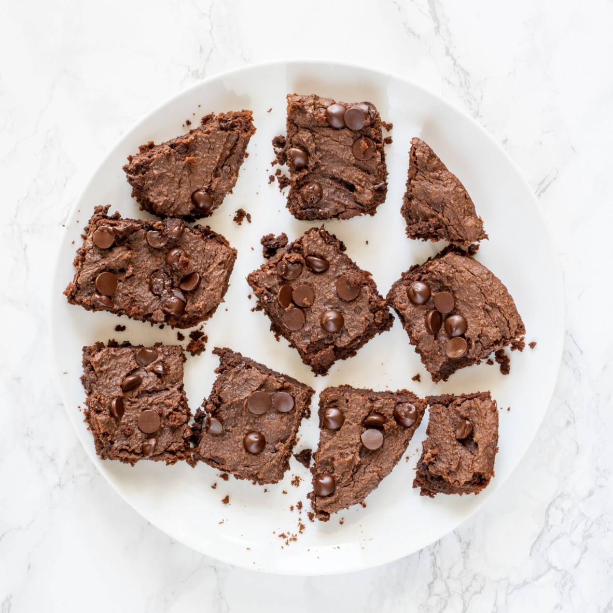

Healthy Brownie

All you have to do is blend all of the ingredients in a food processor
until smooth, mix in the chocolate chips, then pour into a non-stick
baking pan. Using a non-stick baking pan is great for oil-free baking!
If you don’t have an oil-free pan just use parchment paper or a little
coconut oil to grease it.
Ingredients
- 1 15 oz chickpeas drained and rinsed
- 1/2 cup almond butter you can use whatever nut butter you like
- 1/4 cup almond flour
- 1/4 cup cacao powder
- 1/2 cup maple syrup
- 1 tbsp applesauce no sugar added
- 1 tsp vanilla
- 1/4 tsp baking soda
- 1/4 tsp baking powder
- 1/4 tsp pink salt
- 1/2 cup vegan chocolate chips
Instructions
- Preheat the oven to 350F.
-
Add all of the ingredients except the chocolate chips into a food
processor. Blend until completely smooth!
-
Fold in chocolate chips then pour into a baking dish. An 8x8 pan will
work for this.
-
Bake for 20-23 minutes. When they are done, let them cool for about 20
minutes before cutting into them.
- Serve and enjoy!